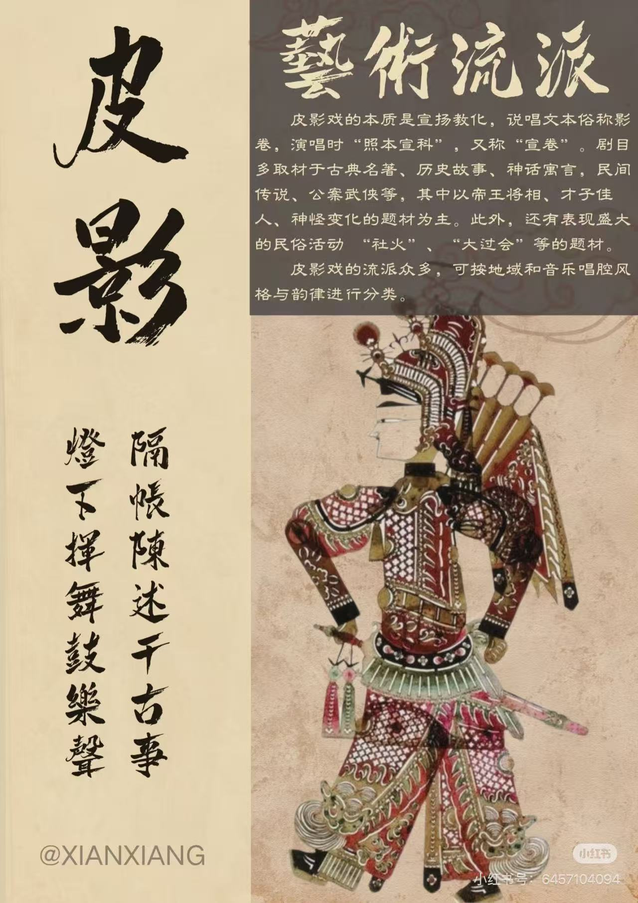
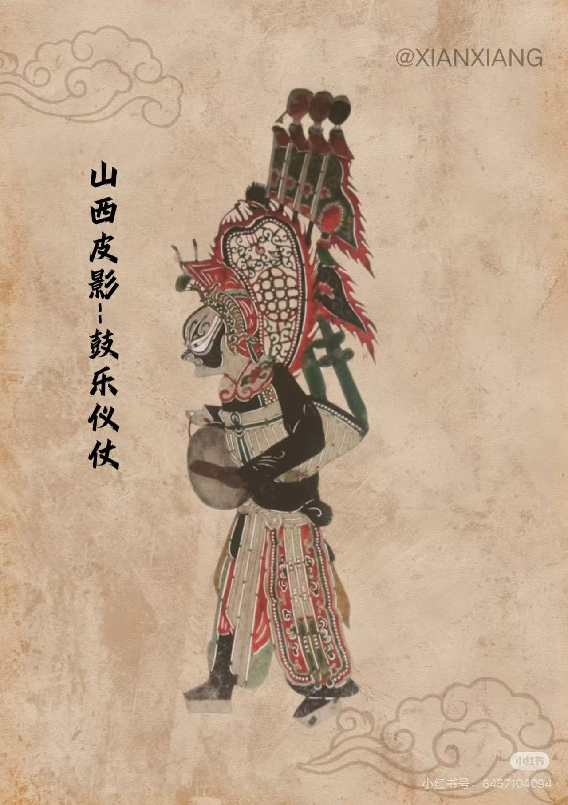
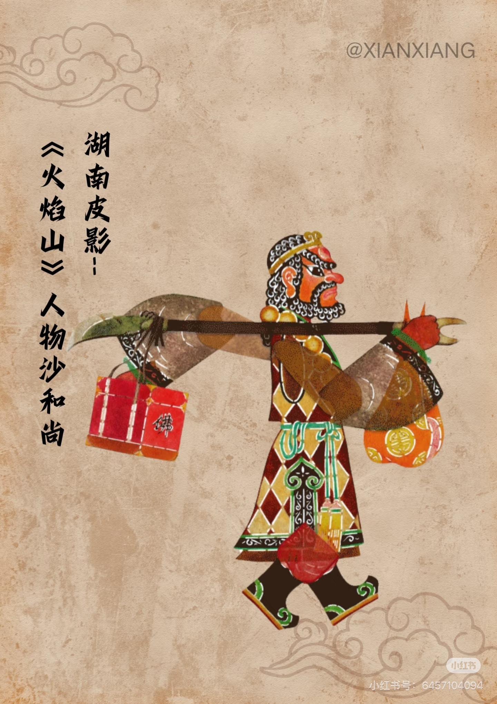
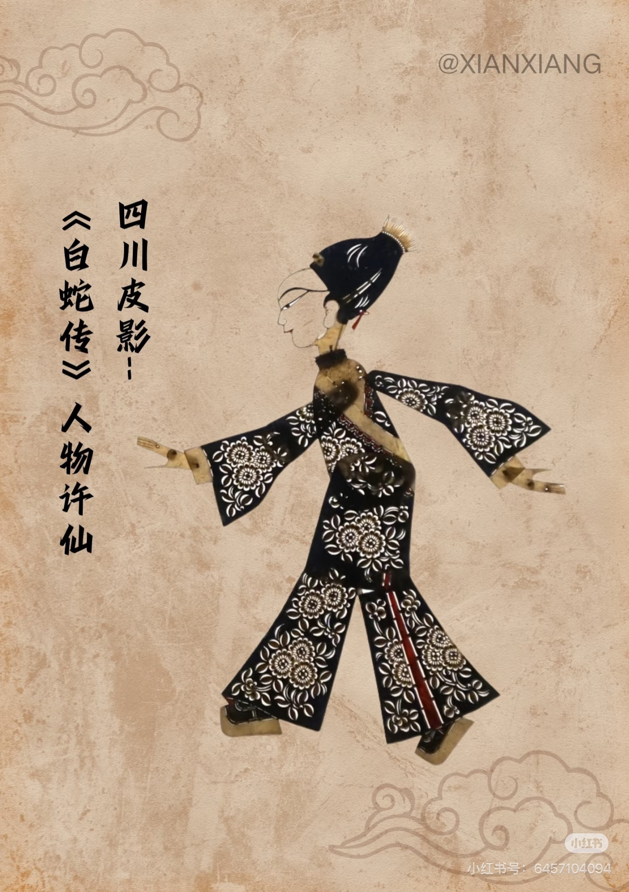

艺术流派

由于皮影戏在中国的广泛传播，在不同地区的长期演变中形成了不同的流派，常见有四川皮影、湖北皮影、湖南皮影、北京皮影、唐山皮影、山东皮影、山西皮影、青海皮影、宁夏皮影、陕西皮影，以及川北皮影、陇东皮影等风格各具特色的地方皮影。
各地皮影的音乐唱腔风格与韵律都吸收了各自地方戏曲、曲艺、民歌小调、音乐体系的精华，从而形成了异彩纷呈的众多流派。
有沔阳皮影戏、唐山皮影戏、冀南皮影戏、孝义皮影戏、复州皮影戏、海宁皮影戏、陆丰皮影戏、华县皮影戏、华阴老腔、阿宫腔、弦板腔、环县道情皮影戏、凌源皮影戏等等。
河北、北京、东北、山东等地的各路皮影唱腔，虽同源于冀东滦州的乐亭影调，但各自的唱腔分别在京剧、落子、大鼓、梆子和民间歌调的滋润之下，又形成了不同的流派。流畅的平调、华丽的花调、凄哀的悲调不一而足。
而其中唐滦地区的掐嗓唱法十分独特。
不同流派皮影欣赏

《山西皮影》

《湖南皮影》

《四川皮影》

《北京皮影》

《唐山皮影》